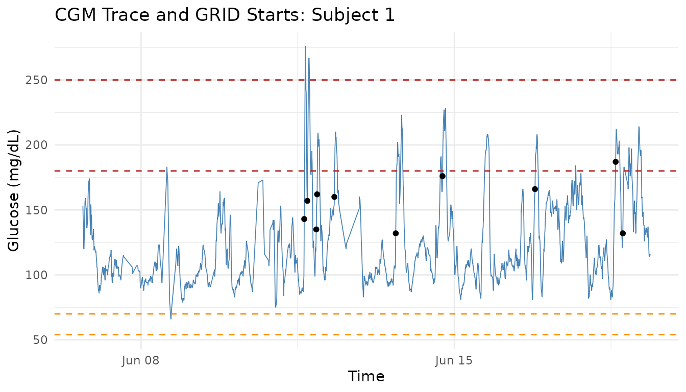

Overview
cgmguru provides high-performance tools for continuous
glucose monitoring (CGM) analysis. It combines two complementary
workflows:
- consensus-style glycemic event detection for hypo- and hyperglycemia
- GRID-based detection of rapid glucose rises and postprandial maxima
This guide expands the package-level vignette into a practical
workflow. It is based on the longer
vignette("intro", package = "cgmguru") source and focuses
on how to move from a raw CGM table to subject summaries, event tables,
GRID starts, postprandial peaks, and simple visual checks.
Data Contract
Most cgmguru functions expect a data frame with these
columns:
| Column | Meaning |
|---|---|
id |
Subject identifier |
time |
POSIXct timestamp |
gl |
Glucose value in mg/dL |
Rows may contain multiple subjects. For speed and reproducibility, it
is good practice to order by id and time
before analysis, especially when chaining several functions.
data(example_data_5_subject, package = "iglu")
data(example_data_hall, package = "iglu")
cgm_data <- orderfast(example_data_5_subject)
data.frame(
rows = nrow(cgm_data),
subjects = length(unique(cgm_data$id)),
first_time = min(cgm_data$time),
last_time = max(cgm_data$time),
min_glucose = min(cgm_data$gl, na.rm = TRUE),
max_glucose = max(cgm_data$gl, na.rm = TRUE)
)
#> rows subjects first_time last_time min_glucose
#> 1 13866 5 2015-02-24 17:31:29 2015-06-19 08:59:36 50
#> max_glucose
#> 1 400
cat("The 'iglu' package is not available, so example-data chunks are skipped.\n")Two Preprocessing Models
The package intentionally separates event-grid analysis from GRID-family analysis.
Glycemic event functions use an iglu-compatible event grid:
These functions can infer reading_minutes per subject
from the median positive timestamp spacing. They align to a full-day
grid, interpolate gaps up to inter_gap, remove larger
gap-masked rows, and classify events by contiguous segments.
GRID-family functions operate on the rows you pass in:
They do not automatically call the event-grid interpolation pipeline. If you want GRID analysis on an interpolated series, explicitly pass the interpolated data.
Subject-Level Overview
sensor_wear() calculates how much observed CGM data are
present. By default it uses each subject’s original timestamp span.
Supplying ndays switches to a fixed retrospective window
ending at each subject’s last valid timestamp, or at a common
end_date if you provide one.
sensor_wear(cgm_data, reading_minutes = 5)
#> # A tibble: 5 × 6
#> id sensor_wear_percent sensor_wear ndays start_date
#> <chr> <dbl> <dbl> <dbl> <dttm>
#> 1 Subject 1 79.8 79.8 NA 2015-06-06 16:50:27
#> 2 Subject 2 58.9 58.9 NA 2015-02-24 17:31:29
#> 3 Subject 3 92.1 92.1 NA 2015-03-10 15:36:26
#> 4 Subject 4 98.7 98.7 NA 2015-03-13 12:44:09
#> 5 Subject 5 95.8 95.8 NA 2015-02-28 17:40:06
#> # ℹ 1 more variable: end_date <dttm>
sensor_wear(cgm_data, ndays = 14, reading_minutes = 5)
#> # A tibble: 5 × 6
#> id sensor_wear_percent sensor_wear ndays start_date
#> <chr> <dbl> <dbl> <dbl> <dttm>
#> 1 Subject 1 72.3 72.3 14 2015-06-05 08:59:36
#> 2 Subject 2 51.1 51.1 14 2015-02-27 09:38:01
#> 3 Subject 3 38.0 38.0 14 2015-03-02 10:11:05
#> 4 Subject 4 90.9 90.9 14 2015-03-12 10:01:58
#> 5 Subject 5 72.5 72.5 14 2015-02-25 08:04:28
#> # ℹ 1 more variable: end_date <dttm>For a broader one-row-per-subject summary, use
detect_all_events().
all_events <- detect_all_events(
cgm_data,
reading_minutes = 5,
sensor_wear_ndays = 14
)
names(all_events)
#> [1] "subject_summary" "glycemic_event_summary"
head(all_events$subject_summary)
#> # A tibble: 5 × 22
#> id TIR TITR TBR70 TBR54 TAR180 TAR250 CV SD mean_glucose GMI
#> <chr> <dbl> <dbl> <dbl> <dbl> <dbl> <dbl> <dbl> <dbl> <dbl> <dbl>
#> 1 Subject 1 91.7 73.7 0.14 0 8.2 0.38 26.9 33.3 124. 6.27
#> 2 Subject 2 26.4 3.36 0 0 73.6 26.1 24.0 52.4 218. 8.54
#> 3 Subject 3 81.3 49.8 0.33 0 18.3 5.68 29.1 44.8 154. 6.99
#> 4 Subject 4 95.1 67.7 0.27 0.05 4.61 0 22.4 29.1 130. 6.41
#> 5 Subject 5 62.1 30.1 0.1 0 37.8 11.3 33.6 58.6 175. 7.49
#> # ℹ 11 more variables: uGMI <dbl>, GRI <dbl>, sensor_wear_percent <dbl>,
#> # hypo_lv1_total_episodes <int>, hypo_lv2_total_episodes <int>,
#> # hypo_extended_total_episodes <int>, hypo_lv1_excl_total_episodes <int>,
#> # hyper_lv1_total_episodes <int>, hyper_lv2_total_episodes <int>,
#> # hyper_extended_total_episodes <int>, hyper_lv1_excl_total_episodes <int>
head(all_events$glycemic_event_summary)
#> # A tibble: 6 × 6
#> id type level total_episodes avg_ep_per_day avg_minutes_below_54_…¹
#> <chr> <chr> <chr> <int> <dbl> <dbl>
#> 1 Subject 1 hypo lv1 1 0.09 0
#> 2 Subject 1 hypo lv2 0 0 0
#> 3 Subject 1 hypo extended 0 0 0
#> 4 Subject 1 hypo lv1_excl 1 0.09 0
#> 5 Subject 1 hyper lv1 16 1.44 0
#> 6 Subject 1 hyper lv2 2 0.18 0
#> # ℹ abbreviated name: ¹avg_minutes_below_54_per_episodeThe subject_summary table includes CGM summary metrics
such as time in range, time below range, time above range, mean glucose,
variability, GMI/uGMI, GRI, and sensor_wear_percent. By
default, these summary glucose metrics are calculated from the original
raw glucose values. Set
summary_metrics_source = "preprocessed" to calculate them
from the internal event grid after interpolation and gap masking.
all_events_preprocessed <- detect_all_events(
cgm_data,
reading_minutes = 5,
summary_metrics_source = "preprocessed"
)
head(all_events_preprocessed$subject_summary)
#> # A tibble: 5 × 22
#> id TIR TITR TBR70 TBR54 TAR180 TAR250 CV SD mean_glucose GMI
#> <chr> <dbl> <dbl> <dbl> <dbl> <dbl> <dbl> <dbl> <dbl> <dbl> <dbl>
#> 1 Subject 1 91.8 74.0 0.16 0 8.08 0.37 26.7 33.0 123. 6.26
#> 2 Subject 2 25.8 3.28 0 0 74.2 26.5 24.1 52.6 219. 8.54
#> 3 Subject 3 81.3 49.8 0.32 0 18.4 5.44 29.0 44.5 154. 6.98
#> 4 Subject 4 94.9 67.4 0.33 0.03 4.75 0 22.4 29.0 130. 6.41
#> 5 Subject 5 62.0 29.6 0.1 0 37.9 11.5 33.4 58.4 175. 7.49
#> # ℹ 11 more variables: uGMI <dbl>, GRI <dbl>, sensor_wear_percent <dbl>,
#> # hypo_lv1_total_episodes <int>, hypo_lv2_total_episodes <int>,
#> # hypo_extended_total_episodes <int>, hypo_lv1_excl_total_episodes <int>,
#> # hyper_lv1_total_episodes <int>, hyper_lv2_total_episodes <int>,
#> # hyper_extended_total_episodes <int>, hyper_lv1_excl_total_episodes <int>Inspecting the Event Grid
When you need to audit event boundaries, use
return_interpolated = TRUE. The returned
interpolated_data is the grid used internally for event
classification.
all_events_with_grid <- detect_all_events(
cgm_data,
reading_minutes = 5,
return_interpolated = TRUE
)
names(all_events_with_grid)
#> [1] "subject_summary" "glycemic_event_summary" "interpolated_data"
head(all_events_with_grid$interpolated_data)
#> # A tibble: 6 × 3
#> id time gl
#> <chr> <dttm> <dbl>
#> 1 Subject 1 2015-06-06 16:55:00 148.
#> 2 Subject 1 2015-06-06 17:00:00 143.
#> 3 Subject 1 2015-06-06 17:05:00 137.
#> 4 Subject 1 2015-06-06 17:10:00 129.
#> 5 Subject 1 2015-06-06 17:15:00 122.
#> 6 Subject 1 2015-06-06 17:20:00 121.The standalone helper interpolate_cgm() is useful when
you want to inspect preprocessing before running event detectors.
event_grid <- interpolate_cgm(cgm_data, reading_minutes = 5)
head(event_grid)
#> # A tibble: 6 × 3
#> id time gl
#> <chr> <dttm> <dbl>
#> 1 Subject 1 2015-06-06 16:55:00 148.
#> 2 Subject 1 2015-06-06 17:00:00 143.
#> 3 Subject 1 2015-06-06 17:05:00 137.
#> 4 Subject 1 2015-06-06 17:10:00 129.
#> 5 Subject 1 2015-06-06 17:15:00 122.
#> 6 Subject 1 2015-06-06 17:20:00 121.Hypoglycemia and Hyperglycemia Events
Use the standalone event functions when you need detailed event
boundaries for one event type. Presets are available through
type = "lv1", "lv2", "extended",
and "lv1_excl".
hyper_lv1 <- detect_hyperglycemic_events(
cgm_data,
type = "lv1",
reading_minutes = 5,
return_interpolated = FALSE
)
hypo_lv1 <- detect_hypoglycemic_events(
cgm_data,
type = "lv1",
reading_minutes = 5,
return_interpolated = FALSE
)
hyper_lv1$events_total
#> # A tibble: 5 × 3
#> id total_episodes avg_ep_per_day
#> <chr> <int> <dbl>
#> 1 Subject 1 16 1.44
#> 2 Subject 2 21 2.13
#> 3 Subject 3 9 1.64
#> 4 Subject 4 13 1.02
#> 5 Subject 5 38 3.72
hypo_lv1$events_total
#> # A tibble: 5 × 3
#> id total_episodes avg_ep_per_day
#> <chr> <int> <dbl>
#> 1 Subject 1 1 0.09
#> 2 Subject 2 0 0
#> 3 Subject 3 1 0.18
#> 4 Subject 4 2 0.16
#> 5 Subject 5 1 0.1
head(hyper_lv1$events_detailed)
#> # A tibble: 6 × 7
#> id start_time start_glucose end_time end_glucose
#> <chr> <dttm> <dbl> <dttm> <dbl>
#> 1 Subject 1 2015-06-11 15:45:00 193. 2015-06-11 16:50:00 187.
#> 2 Subject 1 2015-06-11 17:25:00 195. 2015-06-11 19:00:00 183.
#> 3 Subject 1 2015-06-11 19:20:00 181. 2015-06-11 19:45:00 187.
#> 4 Subject 1 2015-06-11 22:35:00 187. 2015-06-11 23:45:00 185.
#> 5 Subject 1 2015-06-12 07:50:00 181. 2015-06-12 09:15:00 181.
#> 6 Subject 1 2015-06-13 16:55:00 180. 2015-06-13 18:25:00 186.
#> # ℹ 2 more variables: start_index <int>, end_index <int>detect_all_events() is usually the most convenient
interface for reporting, because it aggregates hypo- and hyperglycemia
definitions in one call.
nonzero_events <- all_events$glycemic_event_summary[
all_events$glycemic_event_summary$total_episodes > 0,
]
head(nonzero_events)
#> # A tibble: 6 × 6
#> id type level total_episodes avg_ep_per_day avg_minutes_below_54_…¹
#> <chr> <chr> <chr> <int> <dbl> <dbl>
#> 1 Subject 1 hypo lv1 1 0.09 0
#> 2 Subject 1 hypo lv1_excl 1 0.09 0
#> 3 Subject 1 hyper lv1 16 1.44 0
#> 4 Subject 1 hyper lv2 2 0.18 0
#> 5 Subject 1 hyper lv1_excl 14 1.26 0
#> 6 Subject 2 hyper lv1 21 2.13 0
#> # ℹ abbreviated name: ¹avg_minutes_below_54_per_episodeGRID Analysis
The GRID (Glucose Rate Increase Detector) workflow detects rapid glucose rises, often used as candidate meal or postprandial start points.
grid_result <- grid(cgm_data, gap = 15, threshold = 130)
grid_result$episode_counts
#> # A tibble: 5 × 2
#> id episode_counts
#> <chr> <int>
#> 1 Subject 1 10
#> 2 Subject 2 22
#> 3 Subject 3 7
#> 4 Subject 4 18
#> 5 Subject 5 42
head(grid_result$episode_start)
#> # A tibble: 6 × 4
#> id time gl index
#> <chr> <dttm> <dbl> <int>
#> 1 Subject 1 2015-06-11 15:30:07 143 966
#> 2 Subject 1 2015-06-11 17:10:07 157 985
#> 3 Subject 1 2015-06-11 22:00:06 135 1038
#> 4 Subject 1 2015-06-11 22:25:06 162 1043
#> 5 Subject 1 2015-06-12 07:40:04 160 1154
#> 6 Subject 1 2015-06-13 16:34:59 132 1415
head(grid_result$grid_vector)
#> # A tibble: 6 × 1
#> grid
#> <int>
#> 1 0
#> 2 0
#> 3 0
#> 4 0
#> 5 0
#> 6 0Lowering the threshold or gap generally
makes detection more sensitive.
Postprandial Maxima
maxima_grid() combines GRID starts with local maxima to
identify likely postprandial peaks within a time window.
maxima_result <- maxima_grid(
cgm_data,
threshold = 130,
gap = 60,
hours = 2
)
maxima_result$episode_counts
#> # A tibble: 5 × 2
#> id episode_counts
#> <chr> <int>
#> 1 Subject 1 8
#> 2 Subject 2 18
#> 3 Subject 3 7
#> 4 Subject 4 16
#> 5 Subject 5 39
head(maxima_result$results)
#> # A tibble: 6 × 8
#> id grid_time grid_gl maxima_time maxima_glucose time_to_peak_min grid_index
#> <chr> <dttm> <dbl> <dttm> <dbl> <dbl> <int>
#> 1 Subj… 2015-06-… 143 2015-06-11… 276 40 967
#> 2 Subj… 2015-06-… 135 2015-06-11… 209 50 1039
#> 3 Subj… 2015-06-… 160 2015-06-12… 210 40 1155
#> 4 Subj… 2015-06-… 132 2015-06-13… 202 60 1416
#> 5 Subj… 2015-06-… 176 2015-06-14… 227 45 1677
#> 6 Subj… 2015-06-… 166 2015-06-16… 208 65 2223
#> # ℹ 1 more variable: maxima_index <int>For a more explicit step-by-step version of the workflow, chain the lower-level helpers.
grid_starts <- start_finder(grid_result$grid_vector)
mod_grid_result <- mod_grid(
cgm_data,
grid_starts,
hours = 2,
gap = 60
)
mod_grid_starts <- start_finder(mod_grid_result$mod_grid_vector)
max_after_result <- find_max_after_hours(
cgm_data,
mod_grid_starts,
hours = 2
)
local_maxima <- find_local_maxima(cgm_data)
new_maxima <- find_new_maxima(
cgm_data,
max_after_result$max_index,
local_maxima$local_maxima_vector
)
mapped_maxima <- transform_df(grid_result$episode_start, new_maxima)
between_maxima <- detect_between_maxima(cgm_data, mapped_maxima)
head(mapped_maxima)
#> # A tibble: 6 × 5
#> id grid_time grid_gl maxima_time maxima_gl
#> <chr> <dttm> <dbl> <dttm> <dbl>
#> 1 Subject 1 2015-06-11 20:30:07 143 2015-06-11 21:10:07 276
#> 2 Subject 1 2015-06-12 03:00:06 135 2015-06-12 03:50:06 209
#> 3 Subject 1 2015-06-12 03:25:06 162 2015-06-12 03:50:06 209
#> 4 Subject 1 2015-06-12 12:40:04 160 2015-06-12 13:20:04 210
#> 5 Subject 1 2015-06-13 21:34:59 132 2015-06-13 22:34:59 202
#> 6 Subject 1 2015-06-14 22:39:55 176 2015-06-14 23:24:55 227
head(between_maxima$results)
#> # A tibble: 6 × 6
#> id grid_time grid_gl maxima_time maxima_glucose time_to_peak
#> <chr> <dttm> <dbl> <dttm> <dbl> <dbl>
#> 1 Subject 1 2015-06-11 15:30:07 143 2015-06-11 … 276 2400
#> 2 Subject 1 2015-06-11 22:00:06 135 2015-06-11 … 158 1200
#> 3 Subject 1 2015-06-11 22:25:06 162 2015-06-11 … 209 1500
#> 4 Subject 1 2015-06-12 07:40:04 160 2015-06-12 … 210 2400
#> 5 Subject 1 2015-06-13 16:34:59 132 2015-06-13 … 202 3600
#> 6 Subject 1 2015-06-14 17:39:55 176 2015-06-14 … 227 2700Excursion Analysis
excursion() identifies glucose excursions, defined as
rises greater than 70 mg/dL within 2 hours, excluding starts preceded by
hypoglycemia.
excursion_result <- excursion(cgm_data, gap = 15)
excursion_result$episode_counts
#> # A tibble: 5 × 2
#> id episode_counts
#> <chr> <int>
#> 1 Subject 1 9
#> 2 Subject 2 14
#> 3 Subject 3 11
#> 4 Subject 4 17
#> 5 Subject 5 34
head(excursion_result$episode_start)
#> # A tibble: 6 × 4
#> id time gl index
#> <chr> <dttm> <dbl> <int>
#> 1 Subject 1 2015-06-11 13:40:07 87 948
#> 2 Subject 1 2015-06-11 16:50:07 187 981
#> 3 Subject 1 2015-06-11 20:40:06 120 1026
#> 4 Subject 1 2015-06-13 14:49:59 95 1399
#> 5 Subject 1 2015-06-14 14:39:55 113 1649
#> 6 Subject 1 2015-06-15 13:49:52 85 1895Quick Visualization
Visual checks are useful after tuning thresholds. The plot below shows one subject’s glucose trace, clinical thresholds, and GRID episode starts.
subject_id <- unique(cgm_data$id)[1]
subject_data <- cgm_data[cgm_data$id == subject_id, ]
subject_grid_starts <- grid_result$episode_start[
grid_result$episode_start$id == subject_id,
]
ggplot2::ggplot(subject_data, ggplot2::aes(x = time, y = gl)) +
ggplot2::geom_line(linewidth = 0.3, color = "steelblue") +
ggplot2::geom_hline(yintercept = c(54, 70), linetype = "dashed",
color = "darkorange") +
ggplot2::geom_hline(yintercept = c(180, 250), linetype = "dashed",
color = "firebrick") +
ggplot2::geom_point(
data = subject_grid_starts,
ggplot2::aes(x = time, y = gl),
color = "black",
size = 1.4
) +
ggplot2::labs(
title = paste("CGM Trace and GRID Starts:", subject_id),
x = "Time",
y = "Glucose (mg/dL)"
) +
ggplot2::theme_minimal()
cat("The 'ggplot2' package is not available, so the plot is skipped.\n")Scaling Up
The same workflow applies to larger multi-subject datasets. The
example below uses example_data_hall from
iglu.
hall_data <- orderfast(example_data_hall)
hall_summary <- detect_all_events(hall_data, reading_minutes = 5)
hall_grid <- grid(hall_data, gap = 15, threshold = 130)
data.frame(
subjects = length(unique(hall_data$id)),
rows = nrow(hall_data),
summary_rows = nrow(hall_summary$subject_summary),
grid_rows = nrow(hall_grid$grid_vector)
)
#> subjects rows summary_rows grid_rows
#> 1 19 34890 19 34890Function Map
| Task | Main function |
|---|---|
| Order CGM rows | orderfast() |
| Calculate observed data coverage | sensor_wear() |
| Build an event preprocessing grid | interpolate_cgm() |
| Report all event summaries | detect_all_events() |
| Detect one hypo/hyper event type |
detect_hypoglycemic_events(),
detect_hyperglycemic_events()
|
| Detect rapid glucose rises | grid() |
| Detect local peaks | find_local_maxima() |
| Combine GRID starts and peaks | maxima_grid() |
| Find peaks/minima around starts |
find_max_after_hours(),
find_max_before_hours(),
find_min_after_hours(),
find_min_before_hours()
|
| Refine and map postprandial peaks |
find_new_maxima(), transform_df(),
detect_between_maxima()
|
| Detect large glucose excursions | excursion() |
Next Steps
For more detailed examples, open the focused vignettes:
browseVignettes("cgmguru")
vignette("intro", package = "cgmguru")
vignette("detect_all_events", package = "cgmguru")
vignette("grid", package = "cgmguru")
vignette("maxima_grid", package = "cgmguru")References
- Harvey RA, Dassau E, Bevier WC, et al. Design of the glucose rate increase detector: a meal detection module for the health monitoring system. Journal of Diabetes Science and Technology. 2014;8(2):307-320.
- Broll S, Urbanek J, Buchanan D, Chun E, Muschelli J, Punjabi N, Gaynanova I. Interpreting blood glucose data with R package iglu. PLoS One. 2021;16(4):e0248560.
- Chun E, Fernandes JN, Gaynanova I. An Update on the iglu Software Package for Interpreting Continuous Glucose Monitoring Data. Diabetes Technology & Therapeutics. 2024;26(12):939-950.
- Battelino T, Alexander CM, Amiel SA, et al. Continuous glucose monitoring and metrics for clinical trials: an international consensus statement. The Lancet Diabetes & Endocrinology. 2023;11(1):42-57.